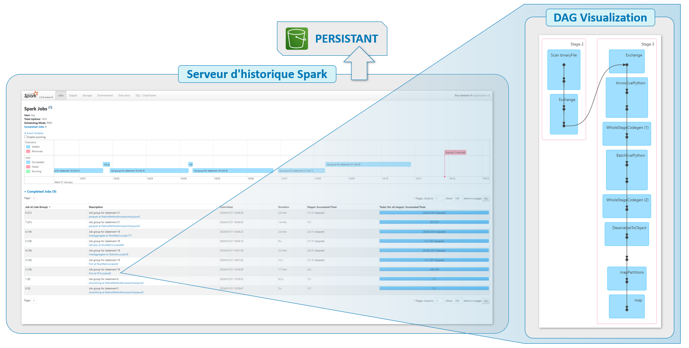

Introduction
Ce projet a pour but de réaliser un traitement sur des données volumineuses à l'aide de Spark dans le cloud.
L'idée après ce premier traitement serait à terme de créer une application mobile de reconnaissance de fruits et légumes à partir de photos.
Ici le projet se concentrera sur la mise en place des premières briques de traitement qui serviront au moment de passer à l'échelle en termes de volume de données.
Notre travail sera basé sur le dataset Fruits-360, qui contient 90 000 photos détourées de fruits et légumes.
Les objectifs du projet sont les suivants :
- Procéder à une extraction de features des images.
- Réduire la dimension des features obtenues.
- Nos traitements devront pouvoir être passés à l'échelle.
- Notre code devra être déployé sur le cloud.
- L'extraction de features sera réalisée par transfer learning, à l'aide d'un modèle préentrainé.
- La réduction de dimension sera réalisée avec une ACP.
- Pour assurer la mise à l'échelle, nous utiliserons Spark via la bibliothèque PySpark.
- Le tout sera déployé sur AWS, avec un cluster EMR pour les calculs et un serveur S3 pour le stockage.
Retrouvez tout le code de ce projet sur mon GitHub
Jeu de données
Notre dataset Fruits-360, contient donc 90 000 photos détourées de fruits et légumes.
Pour réaliser les captures, chaque fruit et légume a été placé sur un axe rotatif et filmé avec une caméra. Des photos ont alors été récupérées des vidéos, permettant ainsi de disposer de tous les angles de vues des fruits et légumes.
Quelques exemples
Les fruits et légumes sont détourés et donc sortis de tout contexte.
Création de l'environnement big data
Pour exécuter nos traitements, nous allons mettre en place notre environnement Big Data à l'aide des services proposés par Amazon Web Service.
Pour anticiper toute problématique RGPD à venir, nous baserons nos traitements et stockage en France.
EMR (Elastic MapReduce)
EMR (Elastic MapReduce) est un service de cloud computing géré par Amazon Web Services (AWS) conçu pour traiter et
analyser de grandes quantités de données à l'aide du framework open-source Apache Hadoop et d'autres outils associés
tels que Apache Spark.
EMR simplifie le processus de configuration, de déploiement et de gestion de clusters de traitement de données, permettant d'exécuter des tâches de traitement
et d'analyse de données à grande échelle. Avec EMR, les utilisateurs peuvent facilement redimensionner leurs clusters pour s'adapter à la demande, optimiser les performances
et réduire les coûts grâce à des options de tarification flexibles basées sur l'utilisation.
Ici, pour limiter les coûts de nos expérimentation, nous limiterons la taille du cluster à trois machines : un Master qui exécutera notre code et s'occupera de répartir les tâches
et deux Cores qui réaliseront les tâches.
Notre code prendra la forme d'un notebook Jupyter. Ce notebook, les données produites par notre traitement (les features extraites)
ainsi que tous les logs d'exécutions de notre programme Spark seront stockés sur notre serveur S3 (Simple Storage Service) et non sur le cluster EMR.
Nos images à traiter seront également stockées sur S3.
Ce point est important car il permettra la persistance des données. En effet, pour limiter les coûts, le cluster ne sera actif que le temps de l'exécution de notre programme.
Si nos données étaient localisées sur notre cluster, par exemple sur notre nœud Master, elles seraient toutes perdues au moment de la résiliation du cluster !
Il conviendra de bien situer notre cluster EMR et notre serveur S3 dans le même VPC (Virtual Private Cloud) afin de nous assurer d'une bonne communication entre les deux.
Différents frameworks et applications sont proposés au moment de la configuration du cluster EMR. Nous devrons aussi paramétrer un bootstrap qui installera quelques dépendances
supplémentaires à l'instanciation des machines. Nous y préciserons une version un peu antérieure de la bibliothèque Pandas pour éviter un problème de compatibilité
avec la version de NumPy actuellement installée par défaut sur les machines. La surcouche Keras devra également être installée, puisque l'installation de TensorFlow
proposée ne l'inclue pas.
Récapitulatif de la configuration du cluster EMR
La persistance des données sera mise en place avec notre serveur S3.
Une fois notre cluster EMR configuré, il va falloir s'y connecter. Nous nous connecterons ici uniquement sur le nœud Master, sur lequel sera exécuté notre notebook, via un tunnel SSH. Il faudra donc au préalable penser à ouvrir le port 22 de cette machine, fermé par défaut. L'accès au notebook se fera via un navigateur, il faudra donc y paramétrer un proxy. Pour ce projet j'ai utilisé FoxyProxy qui est très simple d'utilisation.
Connexion au cluster EMR et exécution du programme
Nous nous connectons au nœud Master, qui exécute le notebook écrit en PySpark, ce qui permet d'exécuter le programme sur Spark, qui distribue alors les tâches à réaliser sur les Cores.
Concernant le serveur S3
J'ai jusqu'ici parlé de serveur S3, il faudra bien entendu y créer un bucket. C'est sur ce dernier que seront stockées nos données. Les échanges de données entre l'EMR et notre bucket
seront faciles, puisque nous avons pris soin de placer ces derniers sur le même VPC (Virtual Private Cloud).
Par défaut, l'ensemble des fichiers stockés sur un bucket est inaccessible depuis l'extérieur (notamment de notre VPC). Si nous souhaitons rendre accessibles certains fichiers,
il faudra alors désactiver cette option « Bloquer l'accès public » par défaut et paramétrer l'accès des fichiers que l'on souhaite partager.
Cette option du blocage de tous les fichiers est un bon garde-fou pour assurer la sécurité de nos données, la désactiver nécessitera la plus grande vigilance dans nos paramétrages.
Dans « Stratégie de compartiment » il est possible de paramétrer l'accès à certains fichiers/dossiers, au format JSON. Par exemple pour partager le notebook et le fichier de sortie de notre programme :
{
"Version": "2012-10-17",
"Statement": [
{
"Effect": "Allow",
"Principal": "*",
"Action": "s3:GetObject",
"Resource": "arn:aws:s3:::Nom_Du_Bucket/jupyter/jovyan/02 - Traitements (AWS-EMR).ipynb"
},
{
"Effect": "Allow",
"Principal": "*",
"Action": "s3:GetObject",
"Resource": "arn:aws:s3:::Nom_Du_Bucket/Results/pcaFeatures.csv"
}
]
}
« "Principal": "*" » signifie que n'importe qui disposant du lien pourra accéder aux fichiers. Prudence donc avec ce type de configuration très ouverte. Il est aussi possible de restreindre cet accès par exemple à des utilisateurs, groupes d'utilisateurs ou rôles IAM (Identity and Access Management), ce qui serait une meilleure pratique.
Chaine de traitement des images
Dans le cadre d'un traitement distribué avec Spark, l'évaluation des opérations est dite « paresseuse » (« lazy evaluation »), c'est-à-dire que Spark attend le plus possible
pour exécuter le graphe des instructions de traitement. Plus précisément, une action déclenche l'exécution des transformations qui la précèdent.
Chargement des données :
Nous chargeons nos images contenues dans le dossier sur notre bucket S3 au sein d'un Spark Dataframe,
au format binaire, ce qui offre plus de souplesse dans la façon de prétraiter les images. Nous ajoutons une colonne label à notre dataframe en récupérant les noms des dossiers des différentes images.
Préparation du modèle et extraction des features :
Nous allons extraire les features des images à l'aide de la technique de transfert learning. Pour ce faire, utiliserons le modèle MobileNetV2,
connu pour sa rapidité d'exécution comparée à d'autres modèles comme VGG16 par exemple. Nous allons donc récupérer l'avant dernière couche du modèle en sortie.
La dernière couche, avec sa fonction d'activation Softmax, est destinée à la classification, ce que nous ne souhaitons pas ici.
MobileNetV2, lorsqu'on l'utilise en incluant toutes ses couches, attend obligatoirement des images de dimension (224,224,3).
Nos images étant toutes de dimension (100,100,3), nous devrons simplement les redimensionner avant de les confier au modèle.
- Nous chargeons le modèle MobileNetV2 avec les poids précalculés issus d'ImageNet et en spécifiant le format de nos images en entrée.
- Nous créons un nouveau modèle avec :
- En entrée : l'entrée du modèle MobileNetV2
- En sortie : l'avant dernière couche du modèle MobileNetV2
Puis, nous lançons l'extraction des features. Pour rappel, il s'agit ici d'une étape de transformation dans Spark, autrement dit l'extraction réelle des features n'aura pas encore lieu, elle sera déclenchée par une action plus tard.
Réalisation de la PCA :
Spark dispose d'une implémentation de PCA. Nous ferons au préalable une conversion de la colonne features en vecteurs, car c'est le format d'entrée requis pour faire une PCA avec Spark.
La réalisation de la PCA va constituer une action qui va déclencher les calculs de featurisation. En effet, pour réaliser la PCA, l'ensemble des features doit être disponible pour pouvoir calculer la matrice de covariance, les vecteurs propres et les valeurs propres associées. Par conséquent, on ne peut pas effectuer une PCA au fur et à mesure que les valeurs sont créées.
Enregistrement des résultats :
Les données de sortie seront stockées sur notre bucket S3 au format Parquet. Ce format offre une compression efficace, un schéma de colonnes et prend en charge le partitionnement des données, ce qui en fait un choix populaire pour les environnements Apache Hadoop et Spark.
Ensuite nous pourrons lire ces données au format Parquet à l'aide de Pandas, puis exporter nos features réduites par PCA au format CSV, que nous stockerons également sur notre bucket S3.
Récapitulatifs des traitements réalisés
L'avantage d'avoir mis en place la persistance des logs de Spark sur notre bucket S3 est que nous pouvons prendre le temps d'analyser en détail
l'historique d'exécution de notre programme, dont la granularité est assez élevée, même une fois notre cluster EMR résilié.
Cette étape est importante, puisqu'elle nous permettra d'identifier notamment d'éventuels goulots d'étranglement dans le traitement de nos données,
dans le but d'optimiser notre code. Spark étant assez verbeux dans ses logs, cette étape peut prendre du temps.
Interface du serveur d'historique Spark

Axes d'amélioration
Quelques axes d'amélioration sont à envisager pour nos traitements.
Concernant la PCA :
- Toutes les variables ont-elles un impact similaire ? → Effectuer un scaling des données avant de réaliser la PCA.
- Le coût en ressources de la réalisation de la PCA augmente rapidement avec la quantité de données → Réaliser une PCA par lot ou utiliser une autre méthode de réduction de dimension.
L'idée est de créer une application mobile reconnaissant les fruits et légumes.
- Le nombre de classes de notre dataset (131) est-il suffisant ?
- Les images sont détourées : donc hors contexte et pas représentatives de photos prises avec un smartphone.
Conclusion
Nous avons atteint les objectifs que nous nous étions fixés, à savoir :
- Extraction des features avec MobileNetV2.
- Réduction de dimension des features par PCA.
- Scalabilité des traitements avec Spark.
- Déploiement de nos traitements sur le cloud avec AWS.
Perspectives
À l'issue de ce travail, nous pouvons envisager les perspectives suivantes :
- Entrainer et évaluer le modèle.
- Si besoin changer de dataset.
- Utiliser une autre technique de réduction de dimension.
- Tester d'autres modèles.